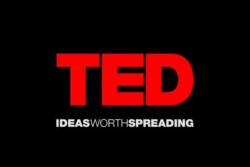

Posted on April 28th, 2020 by NewcombTech
1) Dame Stephanie Shirley: Why Do Ambitious Women Have Flat Heads?
Length: 13:01
Subject: Dane Stephanie Shirley talks about the way she made herself successful. Sharing personal details about her family life, we see that she builds from her hardships. She also discusses how she was able to start her company by deceiving people about her identity.
Description from TED talk: Dame Stephanie Shirley is the most successful tech entrepreneur you never heard of. In the 1960s, she founded a pioneering all-woman software company in the UK, which was ultimately valued at $3 billion, making millionaires of 70 of her team members. In this frank and often hilarious talk, she explains why she went by “Steve,” how she upended the expectations of the time, and shares some sure-fire ways to identify ambitious women.
2) Reshma Saujani: Teach Girls Bravery, Not Perfection
Length: 12:31
Subject: Reshma Saujani uses her time as a speaker on TED Talks to discuss the way in which women are expected to act and excel. She explains how from such a young age, girls are expected to be perfect, when in reality, we need to be teaching them how to be imperfect, learn from their mistakes and put themselves out there.
Description from TED Talk: We’re raising our girls to be perfect, and we’re raising our boys to be brave, says Reshma Saujani, the founder of Girls Who Code. Saujani has taken up the charge to socialize young girls to take risks and learn to program –two skills they need to move society forward. To truly innovate, we cannot leave behind half of our population, she says. “I need each of you to tell every young woman you know to be comfortable with imperfection.”
3) Sheryl Sandberg: Why We Have Too Few Women Leaders
Length: 14:43
Subject: Sheryl Sandberg uses this as an opportunity to talk about her experiences as a woman in a workforce that is dominated by men. She explains how women act and how their mindsets automatically put them at a disadvantage due to their lack of confidence.
Description from TED Talk: Facebook COO Sheryl Sandberg looks at why a smaller percentage of women than men reach the top of their professions –and offers 3 powerful pieces of advice to women aiming for the C-suite.
4) Debbie Serling: Inspiring the NextGeneration of Female Engineers
Length: 17:08
Subject: This is an extremely inspiring and insightful TED Talk, in which Debbie Serling explains that not all girls want to play with Barbies and princesses, and instead want to pursue STEM fields. Serling went to Stanford as an engineering student. Her TED Talk discusses the struggles she went through and the obstacles she had to overcome. One lesson learned from her experience is that succeeding isn’t about being a born genius–it is about working hard and not giving up. Serling demonstrated this when she created the first engineering toy for young girls called “Goldie Blocks.” This toy has given her hope that women will have a huge voice in the future of engineering.
Description from TED Talk: Close your eyes and picture an engineer. You probably weren’t envisioning Debbie Sterling. Debbie Sterling is an engineer and founder of GoldieBlox, a toy company out to inspire the next generation of female engineers. She has made it her mission in life to tackle the gender gap in science, technology, engineering and math.Debbie’s inspiration to create a mission-driven company came in 2008 when she spent 6 months volunteering at a grassroots nonprofit in rural India. She created a viral fundraising campaign called “I Want a Goat,”” raising over $30,000 for economic and educational development in the region. This experience helped pave the way to finding her true passion: inspiring the next generation of female engineers.
5) Temple Grandin: The World Needs All Kinds of Minds
Length: 19:27
Subject: This is one of the most interesting talks ever! Temple Grandin, diagnosed with autism as a child, shows us the different ways people think. Temple is a professor in animal science and details her unique personal and professional struggles. She talks about the importance of finding a good mentor, discovering interests that resonate with you, and the stereotypes associated with autism.
Description from Ted Talk: Temple Grandin, diagnosed with autism as a child, talks about how her mind works –sharing her ability to “think in pictures,” which helps her solve problems that neurotypical brains might miss. She makes the case that the world needs people on the autism spectrum: visual thinkers, pattern thinkers, verbal thinkers, and all kinds of smart geeky kids.
6) Joy Buolamwini: How I’m Fighting Bias in Algorithms
Length: 8:36
Subject: When attempting to complete a digital homework assignment, Joy Buolamwini’s face was not recognized, kickstarting her passion for facial analysis software. To complete the assignment, she was forced to use her roommates face. She then learned that because of her skin color, facial recognition software couldn’t identify her face, but when she puts a white mask on, it can. This drove her to find ways to fix this problem due to the popularity of these software as it causes issues as little as Facebook tagging the wrong person in a picture to wrongful convictions.
Description from TED Talk:MIT grad student Joy Buolamwini was working with facial analysis software when she noticed a problem: the software didn’t detect her face –because the people who coded the algorithm hadn’t taught it to identify a broad range of skin tones and facial structures. Now she’s on a mission to fight bias in machine learning, a phenomenon she calls the “coded gaze.” It’s an eye-opening talk about the need for accountability in coding … as algorithms take over more and more aspects of our lives
7) Stephanie Hill: The Superpowers of STEM
Length: 12:19
Subject: Stephanie Hill calls herself an accidental engineer. Her family was well-educated, but never in the engineering field. Hill discusses how we need fewer accidental engineers and need to teach young people more about the rewarding professions in the STEM field. She tells the viewers about how her job as a software engineer has saved multiple lives daily. Being a programmer can save the world, and we need to expose people to the excitement of STEM. A decision to pursue STEM should not be a decision based on looks; no matter your gender, race, or religion, you have STEM superpowers!
Description from TED Talk: We can’t afford any more accidental engineers, explains Stephanie Hill, who has been recognized for her career achievements and community outreach, especially in the advancement of STEM education. Diversity drives innovation, and we need more voices at the table to make the impossible possible.
8) Kriti Sharma: How to Keep Human Bias Out Of AI
Length: 12:02
Subject: Kriti Sharma does a wonderful job explaining human bias in artificial intelligence (AI). Decisions are made for us because of our gender, race, or background. Algorithms are made to tell us what “we” want. However, it seems to be a bit skeptical when we hear that a black or Latino person is less likely to pay off their loan on time than a white person, but they are more likely to be repeat offenders. This sentiment sounds very biased at first; however, AI has made these biases because of human bias. She discusses how we have reinforced our bias into the AI, and it is now screening out people and putting the majority of people at a disadvantage. Sharma also discusses the different lenses we use when seeing an AI bias versus an actual human bias. Why can a computer be racist, sexist, or homophobic, but a hiring manager can’t be?
Description from TED Talk: AI algorithms make important decisions about you all the time–like how much you should pay for car insurance or whether or not you get that job interview. But what happens when these machines are built with human bias coded into their systems? Technologist Kriti Sharma explores how the lack of diversity in tech is creeping into our AI, offering three ways we can start making more ethical algorithms.
9) Jedidah Isler: How to Nurture Brilliant Women in Stem
Length: 13:34
Subject: JedidahIsler discusses life at an “intersection” and what it was like to learn about statistics that reflected her and her future. While telling us the story of what inspired her to be the person she is today, she explains the importance of changing the statistics. While all women struggle in STEM fields, women of color in STEM-related fields struggle the most. She discusses how her achievements have started a path for other women of color that want to go into STEM, especially physics. She was the first women of color to graduate from Yale, for more than 312 years, receiving her PhD in Astrophysics.
Description from TED talk: Jedidah Isler dreamt of becoming an astrophysicist since she was a young girl, but the odds were against her: At that time, only 18 black women in the United States had ever earned a PhD in a physics-related discipline. In this personal talk, she shares the story of how she became the first black woman to earn a PhD in astrophysics from Yale –and her deep belief in the value of diversity to science and other STEM fields. “Do not think for one minute that because you are who you are, you cannot be who you imagine yourself to be,” she says. “Hold fast to those dreams and let them carry you into a world you can’t even imagine.”
10) Linda Liukas: A Delightful Way to Teach Kids About Computers
Length: 10:56
Subject: This talk is about the importance of inspiring all types of children to get more involved with technology. Linda Liukas gives us insight from personal experiences, teaching us that it is important to make sure children realize that the ideas they have are all possible. Liukas says that coding has given her a way to be a storyteller and create her world with its own rules and practices. By making children feel like their dreams have no limit, they will view the power of technology as magic. Linda Liukas saysthat by expressing yourself through technology, you create something out of nothing with the pure power of logic.
Description from TED Talk: Computer code is the next universal language, and its syntax will be limited only by the imaginations of the next generation of programmers. Linda Liukas is helping to educate problem-solving kids, encouraging them to see computers not as mechanical, boring, and complicated but as colorful, expressive machines meant to be tinkered with. In this talk, she invites us toimagine a world where the Ada Lovelaces of tomorrow grow up to be optimistic and brave about technology and use it to create a new world that is wonderful, whimsical and a tiny bit weird.
Length: 3:26
Subject: In this TEDWOMEN, Professor Moon Duchin, a Mathematician at Tufts University, talks about the ideas we have in terms of who a “mathematician” is, a white man. She talks about her generation and how they can change who people see as mathematicians. She created a gerrymandering project. Gerrymandering is “any kind of line drawing with an agenda”. As described in the video, gerrymandering is when one side is trying to take advantage of their power to benefit themselves. She saw that shapes are what define the outcomes when looking at maps of the US, effecting education, race, political parties and more. The shapes give you the data. Duchin feels that math can help you in every part of the gerrymandering issue. We are able to explore the Gerrymandering is a math problem, a law problem, and allows us to get a better chance at equality.